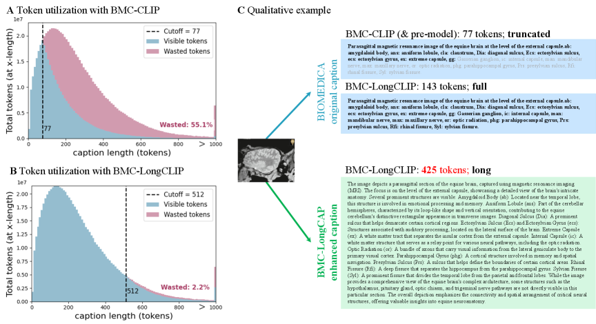
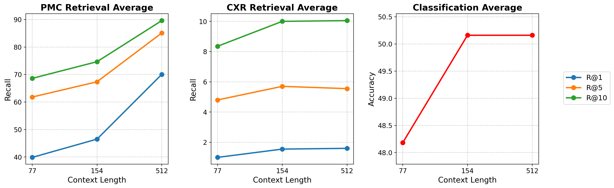
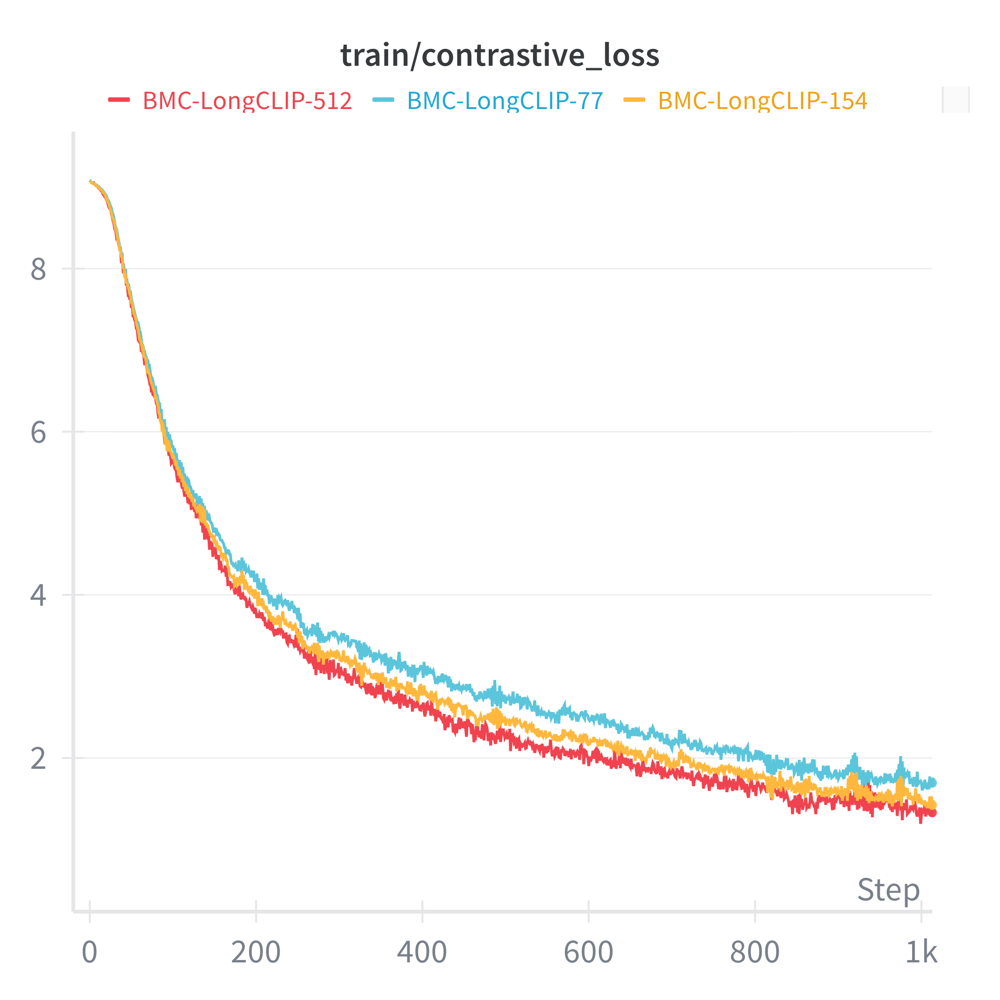

:
\theoremsep
No Tokens Wasted: Leveraging Long Context in Biomedical Vision–Language Models
Abstract
Embedding vision–language models (VLMs) are typically pretrained with short text windows (77 tokens), which forces the truncation of long-format captions. Yet, the distribution of biomedical captions from large-scale open source literature reveals that a huge portion of captions far exceed 77 tokens. To this end, we investigate the impact of pretraining on long-format biomedical captions by extending the context length of text encoders in VLMs. We find that longer context (thus, enabling additional supervision provided in long-format captions) correlates with better retrieval and classification performance. Given this finding, we introduce BIOMEDICA-LongCAP, a dataset of 1M image–caption pairs enriched with context-aware descriptions from full-text articles, providing longer and additional textual supervision. Using BIOMEDICA-LongCAP, we train BMC-LongCLIP, a long-context biomedical VLM with a text encoder supporting windows of up to 512 tokens. Our model extends context capacity by 6.6×, reducing token waste from 55% to just 2.2%. On long-caption retrieval benchmarks, BMC-LongCLIP achieves up to +30% absolute gains in Recall@1 and +2% average improvements in classification, while also converging faster than short-context. Our results demonstrate that long-context modeling is a promising direction for advancing biomedical VLMs.
keywords:
Biomedical Vision-Language Models, Long-context Modeling, Contrastive LearningData and Code Availability
For CLIP training, we adapt OpenCLIP using our forked version with BMC-LongCLIP config111https://github.com/minwoosun/open_clip_bmc. We train on the BIOMEDICA dataset Lozano et al. (2025b) and additionally use MIMIC-CXR Johnson et al. (2019) for evaluation (credentialed access via PhysioNet). Model weights will be released on Hugging Face 222https://huggingface.co/BIOMEDICA/models/BMC-LongCLIP.
1 Introduction

Multimodal foundation models hold immense potential to advance medical practice and biological science Moor et al. (2023). In particular, transformer-based architectures trained on large image–text datasets have set state-of-the-art performance in tasks such as zero-shot image classification and cross-modal retrieval. Despite these advances, a key limitation remains: current multimodal embedding models (e.g., CLIP Radford et al. (2021)) are trained using a restricted text context length—typically capped at 77 tokens—which is often insufficient to capture the rich semantics and complexity of high-throughput biomedical images Zhang et al. (2024). As a result, it is common practice to truncate long-form textual descriptions during training and inference, discarding valuable information. For example, as shown in Figure 1, at a 77 token cutoff, more than 434 million tokens are not used when pretraining with the BIOMEDICA dataset Lozano et al. (2025b) (the largest biomedical image caption dataset).
Beyond architectural limitations, capturing the semantics of biomedical images through text remains a major bottleneck. Prior work has leveraged open-access scientific articles to curate large collections of image–caption pairs Zhang et al. (2023); Lozano et al. (2025b); however, these captions often fail to fully convey the visual content present in an image. For instance, critical descriptive details are frequently embedded in inline references within the corresponding scientific manuscript (such as the analysis of a figure) and omitted from the corresponding image captions.

Given these challenges, the impact of pretraining multimodal embedding models with highly descriptive image captions remains largely unexplored. In this work, we investigate the effects of pretraining biomedical multimodal embedding models with long-captions by introducing the following contributions:
-
•
BIOMEDICA-LongCAP: We present a dataset of 1M biomedical image–caption pairs, with captions enriched through LLM-based augmentation leveraging contextual information from the corresponding source text.
-
•
BMC-LongCLIP: We pretrain CLIP on BIOMEDICA and BIOMEDICA-LongCAP using context lengths of 77, 154, and 512 tokens to study how scaling text context length (thus reducing token waste) impacts model convergence and downstream zero-shot performance.
-
•
Multimodal Long-Text Bench: We introduce two novel biomedical benchmarks designed to evaluate long-text multimodal retrieval.
Our empirical findings show that (1) pretraining CLIP with longer context lengths accelerates convergence, (2) improves zero-shot classification performance on short captions, and (3) unlocks real-world long-context retrieval applications.
By extending the text encoder’s context window by 6.6×, our model reduces token waste from 55% to 2.2%, enabling substantially more supervision from long biomedical captions. On long-caption retrieval benchmarks, BMC-LongCLIP achieves up to 30 point absolute gains in Recall@1, while also delivering 2 point average improvements in classification accuracy. The model also converges faster than short-context baselines, demonstrating the efficiency benefits of longer context windows during training. These findings highlight long-context modeling as a promising direction for advancing biomedical vision–language models.
2 Methods
Datasets: We pretrain all models on the 6M biomedical image–caption subset of the BIOMEDICA-24M dataset Lozano et al. (2025b). In addition, we construct a derived dataset, BIOMEDICA-LongCAP, consisting of 1M image–caption pairs. Each LongCAP caption is created by enriching the original figure caption with contextual information from the corresponding article (e.g., in-line mentions, abstract text, and acronym expansions). A VLM-based augmentation pipeline then refines these captions to retain only features that are visually supported by the image (see Appendix A for details). We use BIOMEDICA-6M for all baseline pretraining, and BIOMEDICA-LongCAP specifically for the BMC-LongCLIP+ variant. The average caption token length is 127 for BIOMEDICA-6M and 323 for BIOMEDICA-LongCAP.
Modeling: We introduce BMC-LongCLIP, a long-context biomedical VLM designed to align images with extended text descriptions. The model pairs a ViT-L/14 CLIP vision encoder (304M) pretrained on DFN-2B Fang et al. (2023) with BioClinical ModernBERT (150M) Sounack et al. (2025), a long-context text encoder pretrained on 53.5B biomedical tokens with an 8,192-token context window.
2.1 Benchmarks
We build and evaluate on two complementary benchmarks that stress different aspects of long-context retrieval.
MIMIC-CXR radiology report (CXR) We constructed a long-text benchmark from the MIMIC-CXR dataset Johnson et al. (2019) by pairing chest X-ray images with their full radiology reports. We sampled 1,000 unique image–report pairs, where the reports provide free-text descriptions.
PubMed Long-Caption (PMC) From 1,000 PMC-OA articles (restricted to recent 2025 publications), we construct long captions by concatenating inline references with figure captions, testing retrieval in scientific literature where extended technical context is essential.
| Benchmark | Model | T2I | I2T | ||||||
|---|---|---|---|---|---|---|---|---|---|
| Name | Context | Batch | R@1 | R@5 | R@10 | R@1 | R@5 | R@10 | |
| Panel A: Context-length ablation | |||||||||
| BMC-LongCLIP | 77 | 8K | |||||||
| CXR | BMC-LongCLIP | 154 | 8K | 1.7 | 5.9 | 10.7 | 1.4 | 5.5 | 9.3 |
| BMC-LongCLIP | 512 | 8K | 1.8 | 5.6 | 10.3 | 1.4 | 5.5 | 9.8 | |
| BMC-LongCLIP | 77 | 8K | |||||||
| PMC | BMC-LongCLIP | 154 | 8K | 44.2 | 64.9 | 72.5 | 48.8 | 69.8 | 76.8 |
| BMC-LongCLIP | 512 | 8K | 68.9 | 84.3 | 89.3 | 71.2 | 85.9 | 89.9 | |
| Panel B: Baseline comparison | |||||||||
| PMC-CLIP | 77 | 128 | 0.0 | 0.5 | 0.7 | 0.2 | 1.0 | 1.6 | |
| BiomedCLIP | 256 | 4K | |||||||
| CXR | BMC-CLIP | 77 | 8K | ||||||
| BMC-LongCLIP | 512 | 8K | |||||||
| BMC-LongCLIP | 512 | 16K | 2.1 | 9.5 | 12.1 | 2.5 | 9.1 | 14.2 | |
| BMC-LongCLIP+ | 512 | 16K | 1.9 | 7.1 | 12.2 | 3.0 | 9.5 | 14.5 | |
| PMC-CLIP | 77 | 128 | |||||||
| MedSigLIP | 77 | N/A | |||||||
| BiomedCLIP | 256 | 4K | 93.7 | ||||||
| PMC | BMC-CLIP | 77 | 8K | 49.0 | 67.6 | 74.0 | 40.8 | 60.4 | 68.4 |
| BMC-LongCLIP | 512 | 8K | |||||||
| BMC-LongCLIP | 512 | 16K | 80.0 | 92.3 | 95.1 | 80.8 | 91.2 | ||
| BMC-LongCLIP+ | 512 | 16K | 80.8 | 91.2 | 94.4 | 79.7 | 90.6 | 93.8 | |
2.2 Baselines
3 Experiments
3.1 Context-length ablation
We assess the impact of extending text context length, thus reducing token waste on downstream zero-shot performance. To this end, models were trained with context windows of 77, 154, and 512 tokens under identical settings (batch size, learning rate, optimizer, epochs; as described in appendix section F).
3.2 Batch size and BIOMEDICA-LongCAP
We investigate the effect of scaling training batch size while holding other settings fixed, comparing 8K and 16K global batches. In addition, we trained BMC-LongCLIP on both BIOMEDICA-6M and BIOMEDICA-LongCAP, a 1M image–caption dataset with captions enriched from full-text context, using a 16K batch size and 512-token context window. We denote this model as BMC-LongCLIP+.
| Model | Biology | Dermatology | Microscopy | Ophthalmology | Pathology | Radiology | Avg | ||
|---|---|---|---|---|---|---|---|---|---|
| Name | Context | Batch | |||||||
| Panel A: Context-length ablation | |||||||||
| BMC-LongCLIP | 77 | 8K | 40.82 | 59.80 | |||||
| BMC-LongCLIP | 154 | 8K | 37.21 | 51.34 | 55.76 | 47.32 | 59.47 | 50.16 | |
| BMC-LongCLIP | 512 | 8K | 55.16 | 53.37 | 55.41 | 42.87 | 63.20 | 50.16 | |
| Panel B: Baseline comparison | |||||||||
| PMC-CLIP | 77 | 128 | |||||||
| MedSigLIP | 77 | N/A | |||||||
| BiomedCLIP | 256 | 4K | |||||||
| BMC-CLIP | 77 | 8K | 65.81 | 50.09 | |||||
| BMC-LongCLIP | 512 | 8K | 34.95 | 53.37 | 55.41 | 63.20 | 50.16 | ||
| BMC-LongCLIP | 512 | 16K | 34.98 | 46.25 | |||||
| BMC-LongCLIP+ | 512 | 16K | 55.54 | 53.05 | 47.65 | 66.99 | 49.48 | ||
4 Results
4.1 Context-length ablation
Extending the text encoder context length consistently improves retrieval performance and training efficiency. Table 1 shows the zero-shot image-to-text and text-to-image recall at in the long context benchmarks. Panel A shows that longer context improves retrieval across recall levels for both CXR and PMC. On CXR, gains are steady but relatively modest. PMC benefits most, especially at stricter thresholds, highlighting the value of long contexts for text-heavy tasks. In addition, we observe that pretraining CLIP with longer context lengths accelerates convergence (appendix section G), indicating that context extension improves not only downstream retrieval but also training efficiency.
4.2 Benchmarking against baselines
BMC-LongCLIP outperforms prior biomedical VLMs on both long-text benchmarks. Table 1 Panel B and Table 2 compare BMC-LongCLIP with existing biomedical VLMs, including PMC-CLIP, BiomedCLIP, MedSigLIP, and BMC-CLIP. We exclude MedSigLIP from the CXR benchmark comparison, as it was trained on the same MIMIC-CXR image–report pairs used to construct our benchmark.
On the CXR benchmark, baselines achieve 6% Recall@10, while BMC-LongCLIP variants reach 10–14%, a more than two-fold improvement. On PMC, BMC-LongCLIP achieves 89–95% R@10, performing on par with or slightly better than BiomedCLIP (91–94%) and outperforming MedSigLIP (46–60%). At the stricter R@1 threshold, BMC-LongCLIP attains 69–81%, surpassing BiomedCLIP (69–73%) and outperforming MedSigLIP (20–31%).
Beyond retrieval, BMC-LongCLIP also improves zero-shot classification accuracy across six biomedical domains (Table 2). While BiomedCLIP and MedSigLIP achieve average accuracies of 41.9% and 36.6%, respectively, BMC-LongCLIP (8K) attains 50.2%, the best overall performance. These results highlight that extending context length not only benefits long-text retrieval but also provides improvements in classification tasks.
4.3 Effect of batch size and long-caption training
Long-context models benefit from enriched captions, while larger batch sizes yield mixed results. Doubling batch size with BMC-LongCLIP (16K) underperforms in microscopy and dermatology. This suggests that long context windows combined with large batch sizes may not uniformly translate into performance gains across domains. In contrast, BMC-LongCLIP+ (16K) with BIOMEDICA-LongCAP data recovers this drop and matches or exceeds the 8K model. These results indicate that long-context modeling is most effective when paired with sufficient long-caption supervision, though performance in microscopy remains comparatively weak and warrants further investigation. Overall. Across all experiments, BMC-LongCLIP outperforms prior biomedical VLMs in long-text retrieval and provides competitive advantages in zero-shot classification.
5 Conclusion
Our results show that extending text context length in biomedical VLMs delivers clear gains. On long-text retrieval tasks, BMC-LongCLIP outperforms prior baselines on both CXR and PMC benchmarks, with the largest gains observed for PMC benchmark. A key limitation is the scarcity of long-text benchmarks across biomedical domains; expanding such resources will be essential for a fuller evaluation of long-context models. Taken together, these results establish long-context modeling as a promising direction for advancing biomedical VLMs.
This research was supported by grants from NVIDIA and utilized NVIDIA A100 GPUs. We gratefully acknowledge additional support from the AIMI–AWS Cloud Credit Program, which provided AWS cloud computing.
We further acknowledge support from the Stanford Data Science Scholars fellowship and ARPA-H to M.S., and the Arc Institute Graduate Fellowship to A.L. This work was also supported by NIH grant R01 GM134483 to R.T., the Hoffman-Yee Research Grant to S.Y.L., and NSF grant 19DMS1208164. S.Y.L. is a Chan Zuckerberg Biohub – San Francisco Investigator.
References
- Eslami et al. (2023) Sedigheh Eslami, Christoph Meinel, and Gerard De Melo. Pubmedclip: How much does clip benefit visual question answering in the medical domain? In Findings of the Association for Computational Linguistics: EACL 2023, pages 1181–1193, 2023.
- Fang et al. (2023) Alex Fang, Albin Madappally Jose, Amit Jain, Ludwig Schmidt, Alexander Toshev, and Vaishaal Shankar. Data filtering networks, 2023. URL https://arxiv.org/abs/2309.17425.
- Johnson et al. (2019) Alistair E. W. Johnson, Tom J. Pollard, Seth J. Berkowitz, Nathaniel R. Greenbaum, Matthew P. Lungren, Chih ying Deng, Roger G. Mark, Steven Horng, and et al. MIMIC-CXR, a de-identified publicly available database of chest radiographs with free-text reports. Scientific Data, 6(1):317, December 2019. 10.1038/s41597-019-0322-0. URL https://doi.org/10.1038/s41597-019-0322-0.
- Lozano et al. (2025a) Alejandro Lozano, Min Woo Sun, James Burgess, Liangyu Chen, Jeffrey J Nirschl, Jeffrey Gu, Ivan Lopez, Josiah Aklilu, Austin Wolfgang Katzer, Collin Chiu, Anita Rau, Xiaohan Wang, Yuhui Zhang, Alfred Seunghoon Song, Robert Tibshirani, and Serena Yeung-Levy. Biomedica: An open biomedical image-caption archive, dataset, and vision-language models derived from scientific literature, 2025a. URL https://arxiv.org/abs/2501.07171.
- Lozano et al. (2025b) Alejandro Lozano, Min Woo Sun, James Burgess, Liangyu Chen, Jeffrey J Nirschl, Jeffrey Gu, Ivan Lopez, Josiah Aklilu, Anita Rau, Austin Wolfgang Katzer, et al. Biomedica: An open biomedical image-caption archive, dataset, and vision-language models derived from scientific literature. In Proceedings of the Computer Vision and Pattern Recognition Conference, pages 19724–19735, 2025b.
- Moor et al. (2023) Michael Moor, Oishi Banerjee, Zahra Shakeri Hossein Abad, Harlan M Krumholz, Jure Leskovec, Eric J Topol, and Pranav Rajpurkar. Foundation models for generalist medical artificial intelligence. Nature, 616(7956):259–265, 2023.
- Radford et al. (2021) Alec Radford, Jong Wook Kim, Chris Hallacy, Aditya Ramesh, Gabriel Goh, Sandhini Agarwal, Girish Sastry, Amanda Askell, Pamela Mishkin, Jack Clark, et al. Learning transferable visual models from natural language supervision. In International conference on machine learning, pages 8748–8763. PmLR, 2021.
- Sellergren et al. (2025) Andrew Sellergren, Sahar Kazemzadeh, Tiam Jaroensri, Atilla Kiraly, Madeleine Traverse, Timo Kohlberger, Shawn Xu, Fayaz Jamil, Cían Hughes, Charles Lau, et al. Medgemma technical report. arXiv preprint arXiv:2507.05201, 2025.
- Sounack et al. (2025) Thomas Sounack, Joshua Davis, Brigitte Durieux, Antoine Chaffin, Tom J. Pollard, Eric Lehman, Alistair E. W. Johnson, Matthew McDermott, Tristan Naumann, and Charlotta Lindvall. Bioclinical modernbert: A state-of-the-art long-context encoder for biomedical and clinical nlp, 2025. URL https://arxiv.org/abs/2506.10896.
- Wang et al. (2024) Peng Wang, Shuai Bai, Sinan Tan, Shijie Wang, Zhihao Fan, Jinze Bai, Keqin Chen, Xuejing Liu, Jialin Wang, Wenbin Ge, Yang Fan, Kai Dang, Mengfei Du, Xuancheng Ren, Rui Men, Dayiheng Liu, Chang Zhou, Jingren Zhou, and Junyang Lin. Qwen2-vl: Enhancing vision-language model’s perception of the world at any resolution, 2024. URL https://arxiv.org/abs/2409.12191.
- Zhang et al. (2024) Beichen Zhang, Pan Zhang, Xiaoyi Dong, Yuhang Zang, and Jiaqi Wang. Long-clip: Unlocking the long-text capability of clip. In European conference on computer vision, pages 310–325. Springer, 2024.
- Zhang et al. (2023) Sheng Zhang, Yanbo Xu, Naoto Usuyama, Hanwen Xu, Jaspreet Bagga, Robert Tinn, Sam Preston, Rajesh Rao, Mu Wei, Naveen Valluri, et al. Biomedclip: a multimodal biomedical foundation model pretrained from fifteen million scientific image-text pairs. arXiv preprint arXiv:2303.00915, 2023.
Appendix A BIOMEDICA-LongCAP details
BIOMEDICA-LongCAP data generation pipeline using Qwen2-VL-72B-Instruct Wang et al. (2024):
-
1.
Context-Aware Caption Augmentation We enhance the original figure caption by contextualizing the image description with additional information from the full-text article. Specifically, we collect the original caption, inline mentions from the main text, the abstract, and acronyms used throughout the aforementioned data. Then a VLM is prompted to augment the original caption, by only leveraging the provided information.
-
2.
Feasibility Assessment. Given an image and its augmented caption, we extract all atomic features from the generated caption and prompt the VLM to evaluate whether it is feasible to discern each feature from the image alone—without relying on external sources or any information not visually present, unless explicitly overlaid with feasibility text. The output is an XML file in which each atomic feature is labeled as either FEASIBLE or NOT_FEASIBLE, along with a rationale explaining the label.
-
3.
Caption Refinement via Feasibility Filtering. Based on the feasibility assessment, we generate a refined caption that preserves only atomic features labeled as FEASIBLE. Features labeled as NOT_FEASIBLE are removed or reworded to ensure that the final image description reflects only information that can be visually supported.
-
4.
Acronym Expansion. While all previous steps had access to acronym definitions, we explicitly expand all acronyms based on a curated acronym list derived from the full-text article. This ensures that the captions are readable and unambiguous.
Appendix B CXR Benchmark
We evaluate cross-modal retrieval between chest radiographs and their paired full-text reports. Let denote the dataset, where is an image and its paired report. Each pair is treated as a one-to-one ground-truth match.
Reports are tokenized with the CLIP tokenizer and embedded via the text encoder , while images are preprocessed and embedded via the vision encoder . We obtain
where all embeddings are L2-normalized.
For textimage retrieval, we rank all image embeddings by cosine similarity with a query ; the ground-truth match is . Imagetext retrieval is defined analogously. Performance is reported as Recall@ for both directions.
We analyzed the token length distribution of the 1,000 reports in our evaluation set using the BioClinical-ModernBERT tokenizer. The reports contained on average 168.3 tokens, with a median of 158 tokens. The shortest report had 49 tokens, while the longest contained 427 tokens.
Appendix C PMC Benchmark
We adopt the same retrieval formulation as CXR Benchmark on biomedical articles from PubMed Central. To construct the benchmark, we used the PubMed Central FTP service to download media bundles containing both .nxml full-text files and associated image files for recently published 2025 articles. From each article, we sampled exactly one unique image–caption pair and did not reuse articles across the benchmark, ensuring that each pair represents a distinct source document.
For the 1,000 CXR reports, tokenization with BioClinical-ModernBERT yielded an average length of 510 tokens, with a median of 460 tokens. Report lengths ranged from 251 tokens at the lower end to 1,022 tokens at the upper bound.
Appendix D Zero-shot classification benchmark
For the detailed dataset provenance, including dataset names, citations, modalities, and class counts, please refer to BIOMEDICA Lozano et al. (2025a), Table S8. Each dataset’s classification task is reformulated into a closed-form VQA task. Labels are mapped to short human-readable text descriptions, and each image is paired with a multiple-choice list of candidate answers (including distractors). The correct label is randomly permuted among the options, and evaluation is performed by computing the similarity between image and answer embeddings.
Appendix E Compute details
| \rowcolorgray!10 GPU Model | GPU Memory | Quantity |
|---|---|---|
| NVIDIA H200 | 141 GB | 8 |
| NVIDIA A100 | 80 GB | 16 |
Appendix F Training parameters
| \rowcolorgray!10 Model | Hyperparameters |
|---|---|
| BMC-LongCLIP | context length: 77/154/512 |
| batch size (per GPU): 1024 | |
| GPUs: 8H200 | |
| effective batch size: 8192 | |
| learning rate: | |
| beta1: 0.9, beta2: 0.95 | |
| warmup: 1000 | |
| max epochs: 20 | |
| precision: FP32 | |
| grad. clip norm: 1.0 | |
| dataset type: WebDataset | |
| dataset: Biomedica-6M | |
| BMC-LongCLIP+ | context length: 512 |
| batch size (per GPU): 1024 | |
| GPUs: 16A100 | |
| effective batch size: 16384 | |
| learning rate: | |
| beta1: 0.9, beta2: 0.95 | |
| warmup: 1000 | |
| max epochs: 20 | |
| precision: FP32 | |
| grad. clip norm: 1.0 | |
| dataset type: WebDataset | |
| dataset: Biomedica-6M + LongCAP |
Appendix G Training loss curves by training context length
